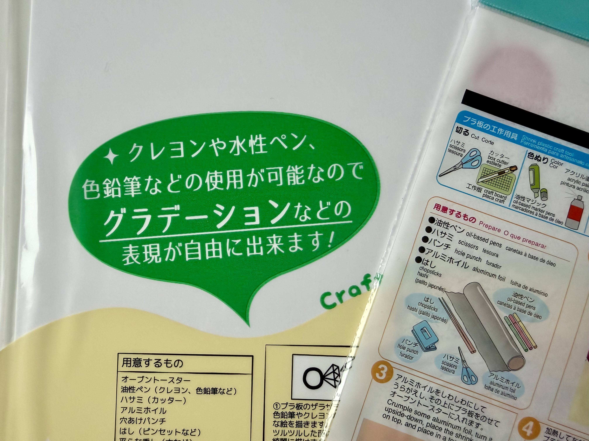

STORY 001「歌川国芳の金魚ストラップ」
始める前からつまづいた材料購入
プラ板を購入し、いざ制作しようとしたところ、プラ板の表面がツルツルして色鉛筆の色が全く乗らず描くことができませんでした。
表面がツルツルのものは、油性ペンでのみ着色が可能だったのでございます。
その後、別の100円ショップにて「色鉛筆で描ける」プラ板を購入したところ上手くいき安心いたしました。
(今回の動画では割愛いたしますが、紙やすりでツルツルな表面を削りフロスト状にする方法でも着色が上手くいきました。)
浮世絵との共通点:
浮世絵（木版画）でも、「木（板）や紙の表面状態」と「絵の具（画材）」の相性に全く同じ問題があったそうでございます。 「思い通りの色・質感を出すには、描くツール（筆／色鉛筆）だけでなく、受ける側（紙／プラ板）の表面加工や定着の仕組みが不可欠である」という部分が一致しておりますね。 江戸時代の浮世絵師たちも、素材選びと組み合わせを試行錯誤したとの記録が残っておりました。

たとえ失敗したとしても100円なのでダメージが少ないことに加え、100円ショップの種類も複数あり再チャレンジがしやすいのも良いですね。このプロジェクトの良い部分を実感いたしました。